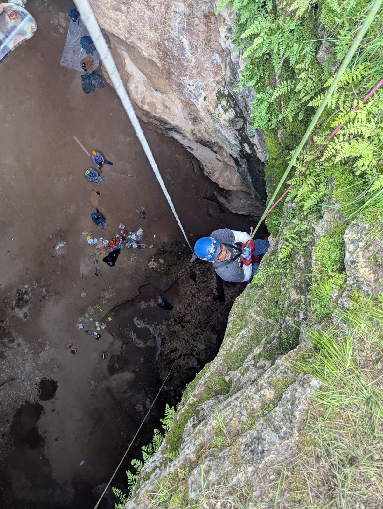
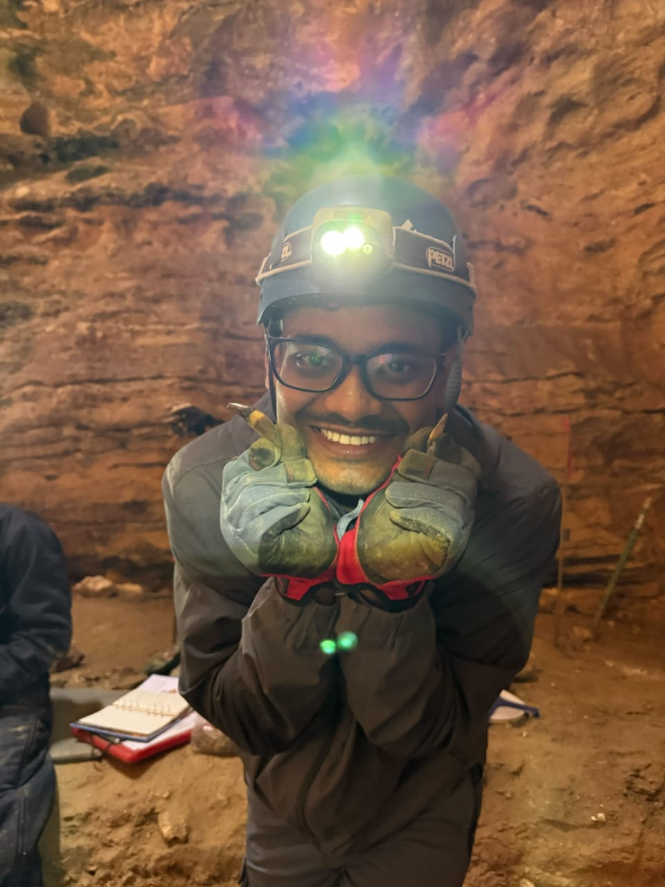
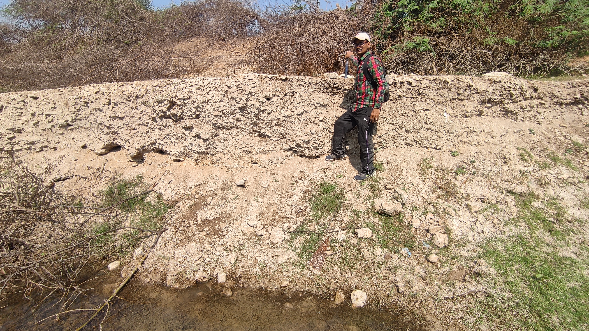
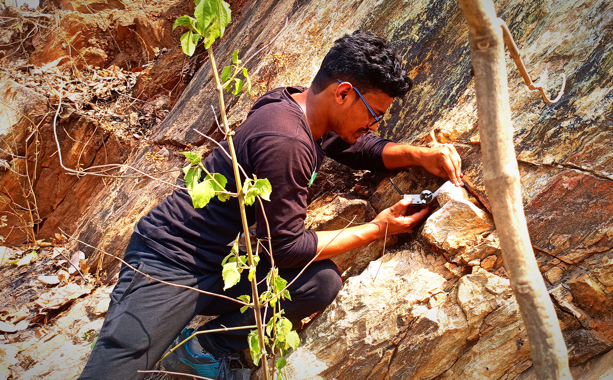
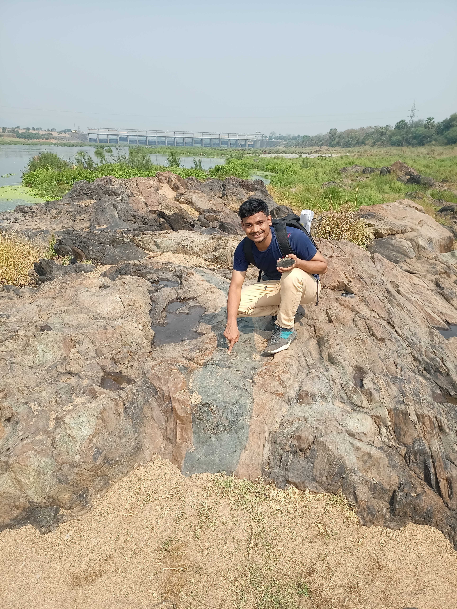

Fieldwork
Natural Trap Cave, Wyoming (2025)
Pleistocene Mammals

Descending into Natural Trap Cave

Me when I found my first mammal teeth fossils
Paleontological fieldwork focused on Pleistocene mammalian fossils at Natural Trap Cave, one of North America's most significant fossil localities for Late Pleistocene megafauna. Successfully identified and excavated mammalian fossils during cave exploration.
Dwarka, Gujarat, India (2023)
Paleontology & Stratigraphy - Marine Invertebrates

Fieldwork on the West Coast of India

Marine bivalve fossil specimen
Fieldwork along the West Coast of India studying marine invertebrate fossil assemblages and stratigraphic sequences. Collected and documented coral and bivalve specimens in collaboration with Dr. Subhronil Mondal (IISER Kolkata).
Galudih, Jharkhand, India
Petrology & Structural Geology

Taking structural geology measurements

With a Dike, Galudih
Geological fieldwork focused on petrological analysis and structural geological mapping in the Jharkhand region of India, examining rock fabric, deformation structures, and lithological variations.